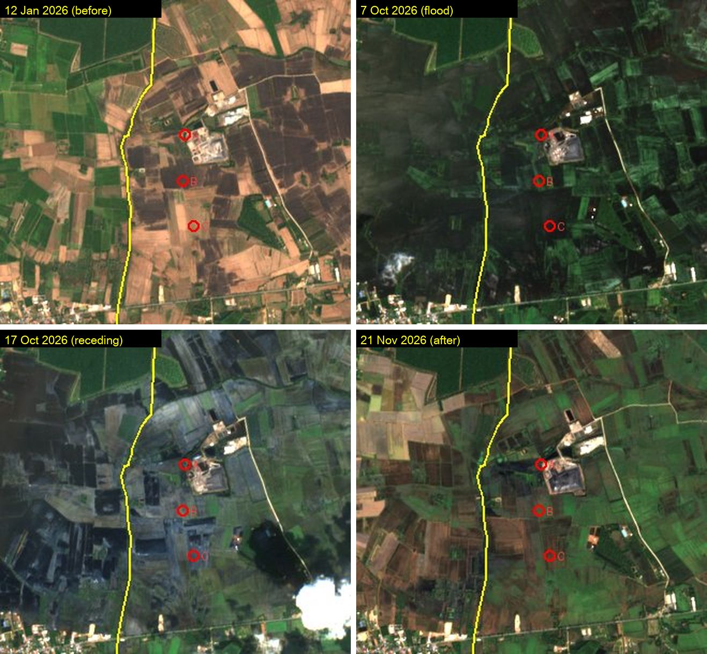
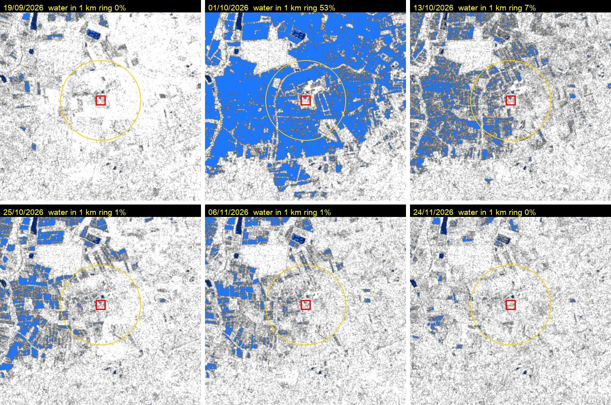

เทสย้อนหลัง: น้ำท่วมปราจีนบุรี ก.ย.–พ.ย. 2569
ย้อนดูภาพดาวเทียมช่วงที่เป็นข่าว เพื่อหาว่าบ่อกากที่เป็นต้นตออยู่ตรงไหน น้ำท่วมถึงเมื่อไร และน้ำไหลไปทางไหน · โฟกัส 1 กรณีที่ข่าวยืนยันชัดที่สุด · หน้านี้ไม่ใส่พิกัดและชื่อบริษัท
0. ปูพื้น: ทำไมต้องย้อนดูช่วงน้ำท่วม
ปลาย ก.ย. 2569 น้ำป่าจากเขาใหญ่ทำให้ปราจีนบุรีท่วมหนัก (5 อำเภอ 50 ตำบล ราว 51,000 ครัวเรือน) น้ำท่วมเข้าบ่อกากอุตสาหกรรมหลายแห่ง แล้วพาสารปนเปื้อนออกไปสู่นา บ่อปลา และหมู่บ้าน ชาวบ้านมีผื่นคัน 116 ราย (ถึง 27 ต.ค.) และกรมควบคุมโรคประเมินความเสี่ยงในรัศมี 2–7 กม. จากแหล่งที่สงสัย
เหตุการณ์แบบนี้เป็นโจทย์ที่ระบบของเราต้องตอบให้ได้ คือ (1) บ่อกากอยู่ตรงไหน (2) น้ำท่วมถึงบ่อเมื่อไร (3) น้ำจากบ่อไหลไปหาใคร เราจึงย้อนเอาเหตุการณ์จริงมาเทสว่าระบบตอบสามข้อนี้ได้แค่ไหน
ดาวเทียมที่ใช้: Sentinel-1 (เรดาร์) มองทะลุเมฆได้ ถ่ายซ้ำทุก 12 วันในวงโคจรเดียวกัน ผิวน้ำนิ่งสะท้อนคลื่นเรดาร์กลับมาน้อยจึงเห็นเป็นสีดำ ใช้จับขอบเขตน้ำท่วม · Sentinel-2 (ภาพสีจริง) เห็นรายละเอียดแต่ใช้ไม่ได้วันที่มีเมฆ ช่วง ก.ย. มีเมฆ 60–100% แทบทุกภาพ
1. กรณีที่โฟกัส: คราบสีรุ้งจากบ่อฝังกลบ ต.หัวหว้า
| วันที่ | เหตุการณ์ (จากข่าว) |
|---|---|
| 28–30 ก.ย. 2569 | น้ำขึ้นท่วมบ่อฝังกลบบางส่วนของโรงงานคัดแยกและฝังกลบ (ประเภท 105) ที่ ม.6 ต.หัวหว้า อ.ศรีมหาโพธิ · ระดับน้ำสูงกว่านาข้าวข้างเคียงราว 3 ม. |
| 28 ก.ย. – 1 ต.ค. | พบคราบสีรุ้งยาวไม่น้อยกว่า 1 กม. ไหลผ่านบ้านสระมะเขือ บ้านคู้ลำพัน บ้านโคกวัด (อ.ศรีมโหสถ) มุ่งหน้าทุ่งบางพรวง · สคพ.7 เก็บน้ำ 3 จุด (A, B, C) ห่างคันดินที่รั่ว 65 / 435 / 850 ม. |
| 5 ต.ค. | กรมโรงงานฯ สั่งหยุดประกอบกิจการ (ม.39) · สอจ. สั่งปิดคลุมหลุมฝังกลบทั้งหมด (ม.37) |
| 12 ต.ค. | ผลแล็บ: จุด A (65 ม.) ปิโตรเลียมไฮโดรคาร์บอน 114,860 มก./ล. · จุด B และ C ต่ำกว่า 3 มก./ล. |
| 19 พ.ย. | น้ำดำกลิ่นเหม็น ปลาแขยงนับแสนว่ายทวนน้ำ หลังวัดสระมะเขือ ราว 3 กม. ท้ายบ่อ · กรมโรงงานฯ พบเบื้องต้นว่าเป็นน้ำชะขยะจากบ่อฝังกลบ |
2. ข้อ (1): หาบ่อเจอไหม เจอ
วิธีที่ใช้: ข่าวและทะเบียนโรงงานไม่มีพิกัดเลย มีแค่ "ม.6 ต.หัวหว้า" และเลขโฉนด แต่บทความของประชาไทลงภาพแผนที่จุดเก็บน้ำ A/B/C ของ สคพ.7 ไว้ เราเอารูปร่างในแผนที่นั้นมาเทียบกับภาพ Sentinel-2 ได้แก่ บ่อฝังกลบหลายบ่อ ลานกำแพงสีขาว ถนนที่โค้งขึ้นไปทางทิศตะวันออก และบ่อสีฟ้าข้างถนน แล้วไล่หาริมเส้นแบ่งเขตอำเภอศรีมหาโพธิ–ศรีมโหสถ จนเจอตำแหน่งที่รูปร่างตรงกันทั้งหมด

- 12 ม.ค. (ก่อน): ลานบ่อฝังกลบเป็นสีขาวเทา ขนาดราว 4–5 เฮกตาร์ รอบ ๆ เป็นนา
- 7 ต.ค. (ช่วงน้ำท่วม): นารอบบ่อกลายเป็นสีเข้มเพราะน้ำท่วม บ่อฝังกลบโผล่เป็นเกาะ และในลานมีบ่อสีดำ
- 17 ต.ค. (น้ำกำลังลด): นาทางทิศตะวันตกยังเปียกเป็นแผ่นสีเทาดำ
- 21 พ.ย. (หลัง): ลานบ่อเปลี่ยนจากสีขาวเป็นสีเทาเข้มทั้งลาน ตรงกับคำสั่งให้ปิดคลุมหลุมฝังกลบ (น่าจะคลุมด้วยแผ่นพลาสติก ภาพยืนยันชนิดวัสดุไม่ได้) และมีหย่อมสีเข้มที่นาฝั่งตะวันตกของบ่อ ใกล้จุด A
ข้อสังเกต: บ่อนี้อยู่ฝั่งศรีมหาโพธิ ห่างเส้นเขตอำเภอเพียงราว 500 ม. น้ำจึงไหลข้ามเขตไปกระทบหมู่บ้านฝั่งศรีมโหสถได้ทันที ถ้าแบ่งความรับผิดชอบตามเขตอำเภอจะหลุดกรณีแบบนี้ ส่วนลานขาวและบ่อสีฟ้าขนาดใหญ่ที่เราเคยเจอในหน้าแรก เป็นอีกที่หนึ่ง อยู่ฝั่งศรีมโหสถ ห่างออกไปราว 4–5 กม.
3. ข้อ (2): น้ำท่วมถึงบ่อเมื่อไร ตอบได้

| วันที่ | น้ำท่วมในรัศมี 1 กม. รอบบ่อ | แปลว่า |
|---|---|---|
| 19 ก.ย. | 0% | ยังไม่ท่วม |
| 1 ต.ค. | 53% | ท่วมรอบบ่อ ตรงกับข่าวว่าน้ำขึ้น 28–30 ก.ย. · ทั้งกรอบภาพ 12×11 กม. มีน้ำท่วม 49 ตร.กม. |
| 13 ต.ค. | 7% | น้ำรอบบ่อลดแล้ว แต่ยังค้างหนาแน่นทางทิศตะวันตก |
| 25 ต.ค. – 6 พ.ย. | 1% | ยังค้างเป็นแปลง ๆ ทางทิศตะวันตกเฉียงใต้ |
| 24 พ.ย. | 0% | แห้งแล้ว |
ใช้กับระบบได้ยังไง: ถ้ามีรายการบ่อกาก (ขั้น ①) อยู่แล้ว ระบบเอาภาพเรดาร์ที่เข้ามาทุก 6–12 วันมาเช็กได้อัตโนมัติว่าบ่อไหนโดนน้ำล้อม แล้วเตือนหมู่บ้านปลายน้ำได้ภายในวันที่ภาพเข้า ตรงกับ AI ตัว A4 ในเล่ม ครั้งนี้ภาพวันที่ 1 ต.ค. มาเร็วกว่าวันที่ คพ. แถลงผลแล็บ (12 ต.ค.) ถึง 11 วัน
4. ข้อ (3): น้ำจากบ่อไหลไปหาใคร ได้บางส่วน
| วิธี | ผล | ใช้ได้ไหม |
|---|---|---|
| ลากเส้นทางน้ำจากความสูงพื้นที่ (Copernicus DEM 30 ม.) ตามที่เขียนในขั้น ③ ของเล่ม | รอบบ่อในรัศมี 1 กม. สูงต่างกันไม่ถึง 1.5 ม. (บ่อสูงราว 3.8 ม. จากระดับทะเล) · เส้นทางที่คำนวณได้วนอยู่รอบบ่อแล้วหยุด ห่างจุดเริ่มแค่ราว 150–450 ม. (แล้วแต่จุดเริ่ม) โดยระดับต่ำลงเพียงราว 0.2 ม. ซึ่งเล็กกว่าความคลาดของแผนที่ความสูงเอง (หลายเมตร) | ใช้ไม่ได้ ในที่ราบน้ำท่วม |
| ดูว่าน้ำลดไปทางไหนจากเรดาร์หลายวัน | หลังวันที่ 1 ต.ค. น้ำรอบบ่อลดก่อน แต่น้ำค้างอยู่ทางทิศตะวันตกและตะวันตกเฉียงใต้นานถึง 6 พ.ย. ซึ่งเป็นฝั่งศรีมโหสถ ตรงกับที่ข่าวบอกว่าคราบไหลไปบ้านสระมะเขือ คู้ลำพัน และโคกวัด | ใช้ได้ บอกทิศได้ |
| หาน้ำสีดำผิดปกติจากภาพสีจริง (21 พ.ย. หลังข่าวน้ำดำ 2 วัน) | เจอหย่อมน้ำสีเข้มหลายจุดในรัศมี 3 กม. แต่น้ำใสที่ลึกก็ดูดำเหมือนกัน จึงแยกน้ำเสียออกจากน้ำปกติไม่ได้ | ยังไม่ได้ |
| ปักหมุดหมู่บ้านปลายน้ำ | แผนที่เปิด (OpenStreetMap) ไม่มีชื่อบ้านสระมะเขือ คู้ลำพัน หรือโคกวัด และไม่มีชื่อคลองแถวนี้เลย | ต้องใช้คน ในพื้นที่ |
5. สิ่งที่ต้องแก้ในเล่มจากเทสนี้
| เล่มเขียนไว้ | เทสพบ | แก้เป็น |
|---|---|---|
| ขั้น ③ ลากเส้นทางน้ำตามความสูงพื้นที่และเส้นคลอง | ในที่ราบน้ำท่วมใช้ไม่ได้ และแผนที่เปิดไม่มีชื่อคลอง | แก้ ใช้ 3 อย่างคู่กัน: ความสูงพื้นที่ (เฉพาะที่ลาดชัน) + ทิศที่น้ำลดจากเรดาร์ + ทิศน้ำไหลที่คนในพื้นที่รายงาน |
| A4 จับน้ำท่วมจากเรดาร์ (แนวคิด) | ทำได้จริงด้วยข้อมูลฟรี (Planetary Computer ไม่ต้องใช้ key) · จับวันที่น้ำล้อมบ่อได้ | เลื่อน จาก "แนวคิด" เป็น "ทดสอบแล้ว 1 กรณี" |
| ขั้น ① หาบ่อจากการเปลี่ยนแปลง | บ่อนี้มีมาก่อนปี 2568 กฎ "ปีต่อปี" จะไม่จับ ต้องรู้ตำแหน่งจากที่อื่น (ข่าว แผนที่จุดเก็บน้ำ ทะเบียน) | เพิ่ม ทะเบียนบ่อต้องรวมบ่อที่มีใบอนุญาตด้วย ไม่ใช่แค่บ่อที่เพิ่งโผล่ใหม่ |
| แจ้งตามเขตปกครอง | บ่ออยู่ศรีมหาโพธิ แต่ผลกระทบอยู่ศรีมโหสถ ห่างเขตแค่ราว 500 ม. | เพิ่ม แจ้งตามทางน้ำ ไม่ใช่ตามเขตอำเภอ |
6. ข้อจำกัดของเทสนี้
- ดูแค่ 1 กรณี · ตำแหน่งจุด A/B/C วางจากภาพแผนที่ในข่าว คลาดได้ราว 50–100 ม.
- เกณฑ์ว่าเป็นน้ำ (เรดาร์ต่ำกว่า −18 dB) เป็นค่ามาตรฐานทั่วไป ยังไม่ได้ปรับกับพื้นที่นี้ · นาข้าวที่มีน้ำขังก็นับเป็นน้ำด้วย
- ดาวเทียมเห็นน้ำ แต่ไม่เห็นสารเคมี · คราบน้ำมันบาง ๆ บนน้ำเล็กเกินกว่าความละเอียด 10 ม.
- ยังไม่ได้เทสกรณีอื่น เช่น น้ำเสียลงแหล่งน้ำประปาที่ ต.บ่อทอง หรือกองกากที่บ้านโคกไม้แดง
ที่มา: ข่าว Thai PBS (2 ต.ค. 2569), ประชาไท (4 ต.ค. 2569 รวมแผนที่จุดเก็บน้ำ สคพ.7), โพสต์ทูเดย์ (13 ต.ค. 2569), เดลินิวส์ (19 ต.ค. 2569), The Momentum (20 ต.ค. 2569), สยามรัฐ (27 ต.ค. 2569), ไทยโพสต์ (19 พ.ย. 2569), Pattaya Mail, Nation Thailand · ทะเบียนโรงงาน 101/105/106 กรมโรงงานฯ · Sentinel-1 RTC และ Copernicus DEM ผ่าน Microsoft Planetary Computer · Sentinel-2 L2A ผ่าน Element 84 Earth Search · เส้นเขตอำเภอจาก OpenStreetMap